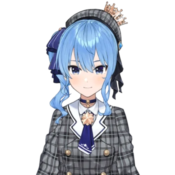

Tsukino Mito (月ノ美兎) is a female Japanese Virtual YouTuber, a well-dressed and well-spoken 16-year-old high
school "iinchou" (委員長, class president). She is a member of (and currently the most popular in number of
subscribers) the Nijisanji group. She is in the "JK gumi" (high school girl gang) along with Shizuka Rin and
Higuchi Kaede.
Higuchi Kaede (樋口楓) is a female Japanese Virtual YouTuber who is part of the Nijisanji group. She is also part
of the "JK gumi" group along with fellow VTubers Tsukino Mito and Shizuka Rin.
Shizuka Rin (静凛) is a Female Japanese Virtual YouTuber who debuted on 10 February 2018, a member of the
Nijisanji group, and part of the "JK gumi" (JK組, high school girl group) along with Tsukino Mito and Higuchi
Kaede.
Tokino Sora (ときのそら, 時乃そら, 時乃空, Lit. Sky of Time) is a female Japanese Virtual YouTuber and the founder member of
hololive. While she debuted alone way before generations were established, she is currently part of "hololive
0th gen" alongside fellow solo debutants: Roboco-san, Sakura Miko, Hoshimachi Suisei and AZKi.
Shirakami Fubuki
Hololive
Shirakami Fubuki (白上フブキ) is a female Japanese Virtual Youtuber associated with hololive, debuting as part of its
first generation of VTubers alongside Yozora Mel, Aki Rosenthal, Natsuiro Matsuri and Akai Haato. She is also
part of a unit inside hololive called hololive Gamers (ホロライブゲーマーズ) alongside Ookami Mio, Nekomata Okayu and
Inugami Korone.
Natsuiro Matsuri
Hololive
Natsuiro Matsuri (夏色まつり) is a female Japanese Virtual YouTuber associated with hololive, debuting as part of its
first generation of VTubers alongside Yozora Mel, Aki Rosenthal, Shirakami Fubuki and Akai Haato.
Hoshimachi Suisei
Hololive

Hoshimachi Suisei (星街すいせい) is a female Japanese Virtual YouTuber associated with hololive. While originally an
independent VTuber who eventually was recruited into hololive, she is currently part of "hololive 0th gen"
alongside fellow solo debutants: Tokino Sora, Roboco, Sakura Miko and AZKi.
Elira Pendora (エリーラ ペンドラ) is an English female Virtual YouTuber affiliated with Nijisanji EN's first-wave group
LazuLight, alongside Pomu Rainpuff and Finana Ryugu.
Pomu Rainpuff (ぽむ れいんぱふ) is an English female Virtual YouTuber affiliated with Nijisanji EN's first-wave group
LazuLight, alongside Elira Pendora and Finana Ryugu.
Finana Ryugu (フィナーナ 竜宮) is an English female Virtual YouTuber affiliated with Nijisanji EN's first-wave group
LazuLight, alongside Pomu Rainpuff and Elira Pendora.
Selen Tatsuki (セレン 龍月) is an English female Virtual YouTuber affiliated with Nijisanji EN's second-wave group
OBSYDIA, alongside Rosemi Lovelock and Petra Gurin.
Rosemi Lovelock
Nijisanji
Rosemi Lovelock (ロゼミ ラブロック) is an English female Virtual YouTuber affiliated with Nijisanji EN's second-wave
group OBSYDIA, alongside Selen Tatsuki and Petra Gurin.
Petra Gurin (ペトラ グリン) is an English female Virtual YouTuber affiliated with Nijisanji EN's second-wave group
OBSYDIA, alongside Selen Tatsuki and Rosemi Lovelock.